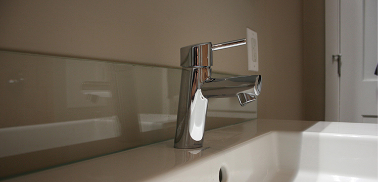

| Tile & Stone | Flooring | Whirlpool Tubs | Showers | Fixtures |
| Countertops | Cabinets | Exhaust fans | Lighting | Water damage |
Services > Fixtures & Faucets
Did you know that you fixtures and faucets are the most used element in the home? WE DO. That's why we recommned only quality crafted products. Hardware in the bathroom does a lot to polish off the room’s look. The type of bathroom fixtures and faucets you select for your bathroom is important. While these types of fixtures are decorative in nature, their functionality and durability is much more important. Having bath fixtures that don’t crack or wear keeps your bathroom looking elegant, tidy and modern while giving you convenient functionality.